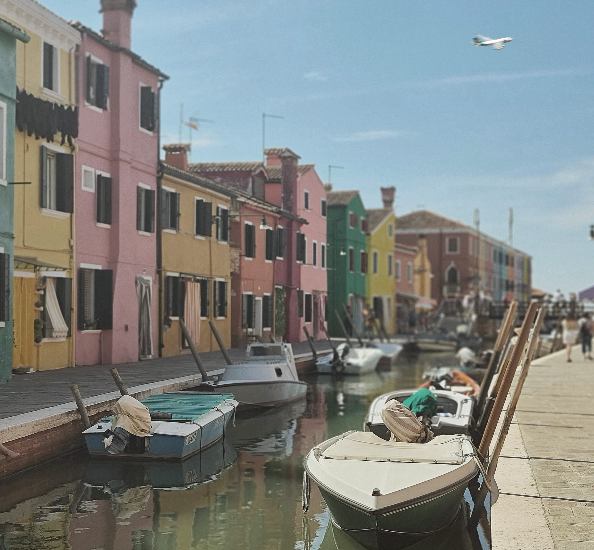

Färger vid kanalen
Ett fotografi där ljus, kontrast och färgbalans har justerats.
Ett personligt bildgalleri där färg, ljus och kreativitet står i centrum.
Utforska bildgallerietDen här webbplatsen är skapad som en del av laboration 1.2 i kursen Bildbehandling vid Mittuniversitetet. Syftet är att arbeta med digitala fotografier och undersöka hur bildredigering kan förbättra ett motiv.
Jag har arbetat med bland annat färgkorrigering, ljus, kontrast, beskärning, borttagning av objekt och förändring av färger i fotografier.
Bilderna har redigerats i Photopea och webbplatsen har utvecklats med HTML och CSS i Visual Studio Code.
Tre fotografier som har bearbetats med olika bildredigeringstekniker.

Ett fotografi där ljus, kontrast och färgbalans har justerats.

En bild där ett störande objekt har avlägsnats och färgerna bearbetats.

Ett fotografi som har rätats upp, färgkorrigerats och fått en byggnad omfärgad.
Jag heter Mikael Emanuelsson och studerar webbutveckling vid Mittuniversitetet. Här kombinerar jag mitt intresse för teknik och kreativt arbete med digital bildbehandling.
Läs mer om mig